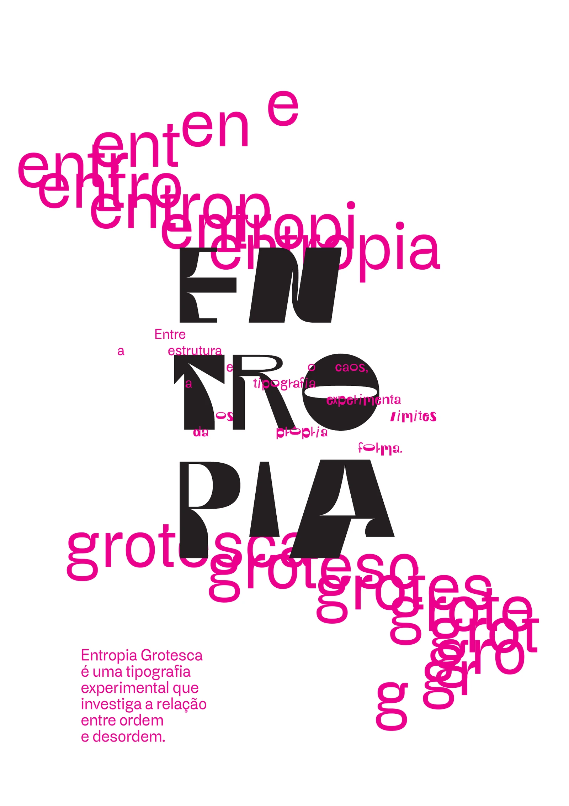
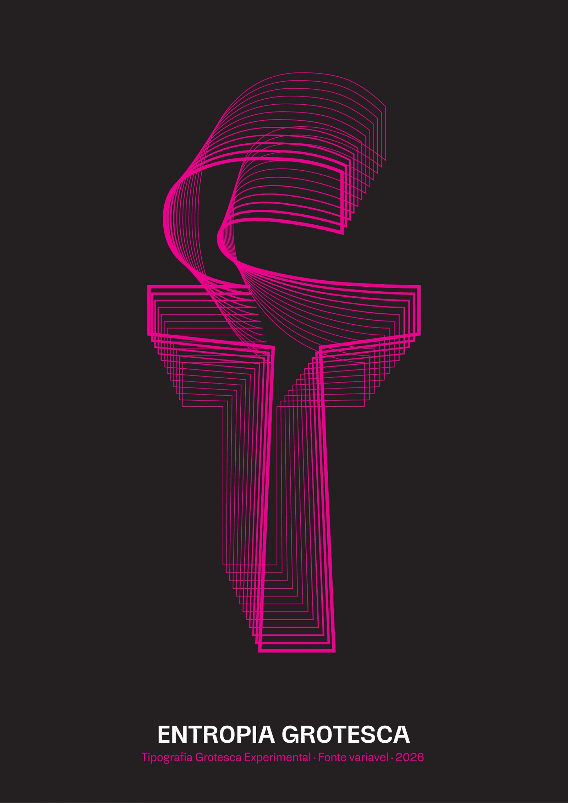
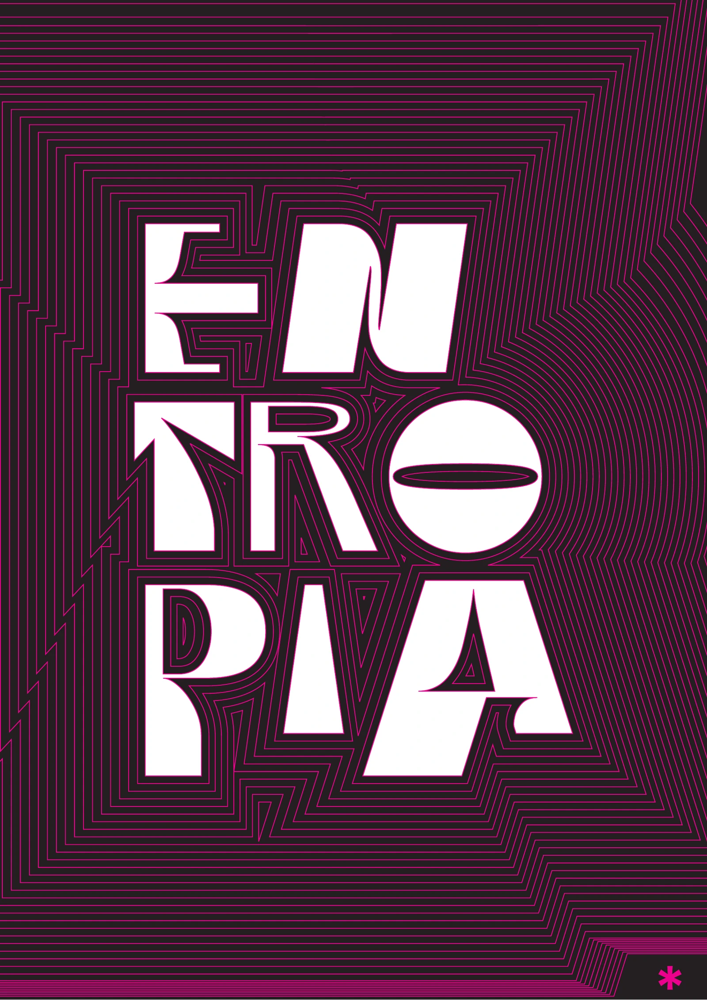
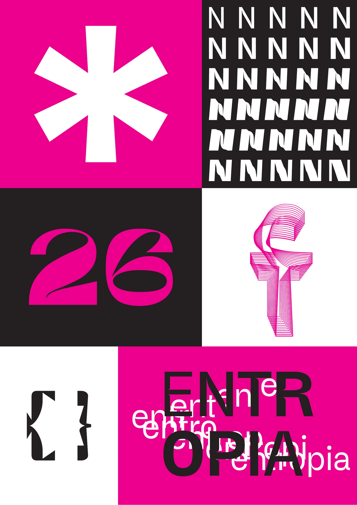
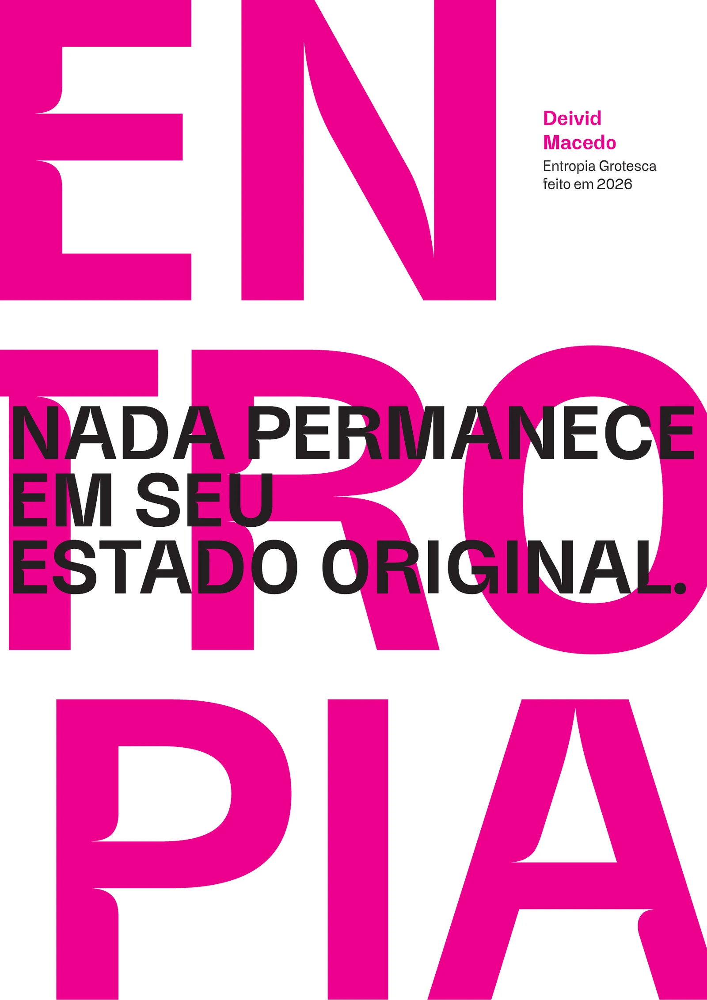

TIPOGRAFIA GROTESCA EXPERIMENTALFONTE VARIÁVEL · 2026
ENTROPIA
Uma investigação tipográfica sobre a relação entre ordem e desordem.
EXPLORE A FORMA ↓01 / SOBRE O PROJETOENTROPIA GROTESCA
Uma tipografia
em transformação.
Entropia Grotesca é uma tipografia grotesca experimental que investiga a relação entre ordem e desordem por meio de dois eixos variáveis: entropia e peso.
02 / SISTEMA VISUALPÔSTERES · 2026

COMPOSIÇÃO EM DESTAQUE
Nada permanece
Nada permanece
em seu estado
original.
As formas se repetem, se deslocam e se reorganizam. A composição explora o comportamento da tipografia entre estrutura e transformação.




DEIVID MACEDOENTROPIA GROTESCA · 2026
03 / EXPLORADOR DE GLIFOS
Explore a forma.
Passe o cursor para experimentar.
Clique em um glifo para fixá-lo e editar seus eixos.
CARACTERES DISPONÍVEIS 183
183 GLIFOSHOVER / CLIQUE PARA EXPLORAR
TESTE A TIPOGRAFIAESCREVA E EXPERIMENTE
Nada permanece em seu estado original.